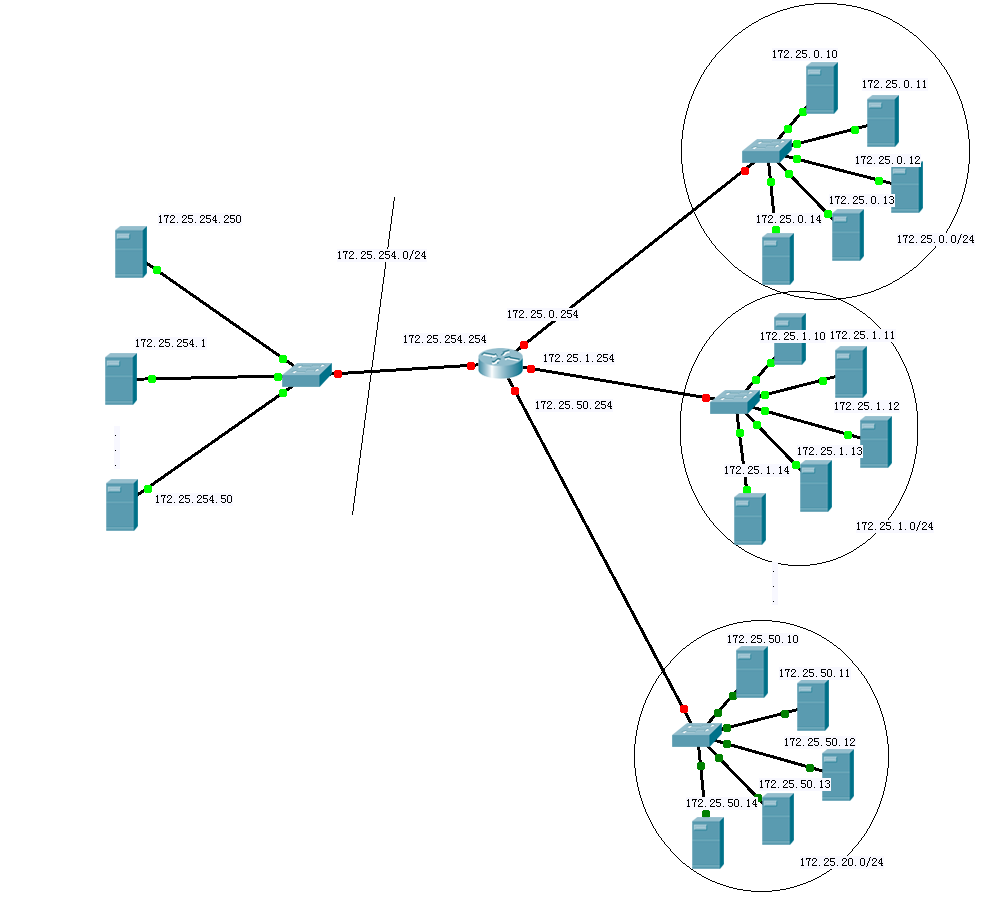

LINUX 基础服务课程环境使用说明
UP100 课程基于RHEL6.5、RHEL7.0、ubuntu1604、WindowsXP和Windows2012R2系统
需要开启虚拟机可以直接双击图标，第一次启动时将从讲师机下载映像文件，可能会比较慢。
控制虚拟机可以使用kiosk用户，执行rht-vmctl命令，请自行查看命令使用。
授课网络环境配置如下
f0~fN为教室物理机，其域名为foundationN.ilt.example.com ,可简写为fN。其IP为172.25.N.250，f0特殊为172.25.254.250。
classroom虚拟机为所有物理机和虚拟机的默认网关，配置了多个网卡设置了所有172.25.N.254的地址，保证虚拟机、物理机和各个学生机之间的路由。配置了DHCP、DNS和HTTP服务，其域名为classroom.example.com可简写为classroom。
rhel6虚拟机均安装RHEL6.5系统，rhel7虚拟机均安装RHEL7.0系统，ubuntu1604虚拟机均安装Ubuntu1604系统，均安装图形化界面并配置runlevel 5启动，root密码为uplooking ，配置了基础的YUM源指向classroom， rhel6、rhel7、ubuntu1604、winxp和win2012r2虚拟机均配置了1块虚拟机网卡，eth0接入物理机br0网桥，动态获得ip地址:
| hostname | ipaddr |
|---|---|
| rhel7 | 172.25.N.10 |
| rhel6 | 172.25.N.11 |
| winxp | 172.25.N.12 |
| ubuntu | 172.25.N.14 |
| win2012r2 | 172.25.N.15 |
rhel6、rhel7、ubuntu1604虚拟机均配置两块虚拟硬盘vda和vdb，以方便授课演示。除winxp和win2012r2之外其它虚拟机均配置2GB运行内存，winxp配置1GB运行内存，win2012r2配置4GB运行内存。
winxp虚拟机主机上安装了如下软件：
- Cisco Packet Tracer
- Putty
- Winscp
- Xshell
- Wireshark
- Navicat for Mysql
- Microsoft Visio 2010
- 7-zip
已在classroom上完成DNS配置，正向和方向域名及邮件代理域名和虚拟机域名设置如下：
rhel7主机：172.25.N.10
- rhel7-fN.example.com
- dN.example.com
- imapN.example.com
- smtpN.example.com (MX)
rhel6主机： 172.25.N.11
- rhel6-fN.example.com
- sN.example.com
- wwwN.example.com
- webapp-fN.example.com
winxp主机： 172.25.N.12
- winxp-fN.example.com
- install 主机：172.25.N.13
- install-fN.example.com
- ubuntu主机：172.25.N.14
- ubuntu-fN.example.com
win2012r2主机：172.25.N.15
- win2012r2-fN.example.com
注意事项
rhel6.5 SElinux有bug，光盘中默认没有selinux相关manpage，看manpage需要安装selinux-policy-doc包，但这个包需要从RHN下载。
网络拓扑图

基础服务简介
本章将讲解以下内容：
- RHEL6 中Linux系统服务的基础知识、System V与Xinetd的概念，以及通过 servcie 命令来启动某一服务，通过 chkconfig 命令来设置服务是否开机启动
- RHEL7 中 已经替换掉 System V init，并正式采用全新的初始化进程 Systemd，以及通过systemctl 命令来启动某一服务和设置该服务是否开机启动
重点简介rhel6，rhel7只做命令的介绍，具体内容请参考《systemd说明》
系统服务的基本概念
服务，其实就是运行在操作系统后台的一个或者多个应用程序，为计算机系统或用户提供某项特定的服务。
在我们的windows操作系统中，其在后台也运行了许许多多的服务。例如我们装的杀毒软件，其在后台运行了许多我们看不见的服务程序，通过这些服务来为用户或者计算机系统来提高特定的功能。
服务通常是不中断运行的，随时准备接受请求，从而提供某项服务。例如我们日常使用的网页服务，其就是由一个运行在所访问网站的服务器上的httpd服务提供的服务，我们通过在浏览器输入需要访问网站的域名，服务器端的httpd服务就会随时的接收我们发送过来的请求，并响应回给我们的用户。
我们Linux系统绝大多数服务都是网络服务，例如邮件服务、FTP服务、httpd服务等等，网络服务可以使为其他用户、其他计算机提供特定的服务。
services 和 daemons
| 服务名 | 守护进程名 |
|---|---|
| rsyslog | rsyslogd |
| atd | atd |
| crond | crond |
服务的分类 服务名通常有两个，一个这个基于程序的服务名称，我们把它叫做service，比如说ftp服务，samba服务等等。
还有一个是基于进程的服务名称，我们通常把它叫做daemon，守护进程，也就是我们使用ps命令时候看到的名称，比如httpd，比如named之类的等等，一般服务的进程名都是程序名称后加上一个d，当然也有不少的特例。之后我们都会一一去说这些服务。
基于 daemon 分类
那么根据daemon，也就是守护进程，我们可以把服务分成两类，一类是独立启动的服务，叫做stand alone daemon，我们之后学的服务基本上都是独立启动的服务。另外一种叫做super daemon。我们分开来来说一下这两种服务的特征。
- 1> stand alone daemon 独立启动服务
- 2> super daemon 超级服务 xinted
System V
总的来说，Linux系统通常作为服务器端的操作系统来用的，所以Linux系统提供了许许多的的服务，有些服务需要我们自己来进行配置，这些服务的目的就是为了给我们的计算机、用户提供某项特定的功能。那么对于各种不同的服务，Linux系统是怎么样来统一进行管理的呢？
在Linux操作系统中，Linux对于服务的管理体系是沿用了System V的服务管理体系，System V原来是早期AT&T的一个操作系统。
对于Linux系统，System V提供了运行级别的概念，还记得之前一直提到过的Linux的启动运行级别吗？没错，System V一共提供了7种运行级别
0 关机
1 单用户模式
2 不带网络的多用户模式
3 带网络的多用户模式，纯文本界面
4 未使用
5 带网络的多用户模式，图形界面
6 重启
对于我们来说，通常使用的是级别3和级别5，每个级别下都有对应的启动、不启动的服务，比如单用户模式下，所有的服务都是不启动，这些都是通过System V这个服务管理体系来决定的
System V定义了init为系统启动的第一个进程，进程PID=1，这个进程的目的就是去查看 /etc/inittab 中的系统启动级别从而来启动对应的服务
对于不同的服务，因为其提供该服务的厂家不同，所以这些的服务的启动、关闭机制通常不同，在Linux系统中，为了方便的管理这些服务，每个服务的启动、结束、重启等操作都由一个System V脚本来进行控制，拥有固定的格式。
对于Linux系统上的服务，这些服务的System V脚本文件都是存放在 /etc/rc.d/init.d 这个目录下
[root@rhel6 ~]# cd /etc/rc.d/init.d/ |
我们看到在这个目录下，存在了许多纯文本文件，这些文件都是系统每一个服务的System V的脚本文件，对于该脚本文件，我们要启动什么服务，都是通过这些脚本文件来启动的，我们也可以通过编写System V脚本文件来手工创建一个我们自己的由System V来控制的服务。
对于Linux的所有的这些服务，我们通过 service 这个命令来进行统一的管理
命令 service 可以调用指定服务的System V脚本，并执行指定的动作
service 服务名 [start | stop | restart | status]
对于Linux系统的这些服务，我们都是通过 service 这个命令去调用该服务对应的System V脚本，并执行其指定的动作
刚才我们也说到了，System V定义了运行级别的概念，每个运行级别对应有启动、不启动的服务，在 /etc/rc.d 这个目录下，除了我们刚才的 init.d 这个目录，我们还发现还有其它的一些目录，诸如 rc0.d、rc1.d等这些目录就分别对应了系统的7中启动级别，每个目录里面都存放了许多的
文件，每个文件对应着一个特定的服务，并标志有是否开机启动以及启动顺序。
我们发现，在这些目录里面，存放的都是链接文件，不过这每一个链接文件的名字都有着严格的规定。每一个链接文件都由3部分组成
K15httpd -> ../init.d/httpd S55sshd -> ../init.d/sshd
- ①第一个部分是第一个字母K或者S，表示该服务是不是是不是开机自动启动，K表示开机不启动，S表示开机就启动
- ②第二个部分是一个数字，这个数字代表的是该服务的启动顺序，服务启动的顺序非常的重要，例如我们的网络服务需要在邮件服务之前启动
- ③第三个部分就是对应服务的名字，该链接文件其实都是指向的是 init.d 这个目录下的System V脚本文件
我们如果希望某服务开机就启动，可以通过修改 rc5.d 目录下的链接文件，不过这样做很麻烦，Linux系统提供了一个 chkconfig 命令可以来设置服务是否开机启动
我们通过 chkconfig --list 命令来查看所有服务的开机启动情况
比如我们需要设置 network 服务开启自动启动，可以使用 chkconfig httpd on 命令即可
比如我们需要设置 network 服务开启不启动，可以使用 chkconfig httpd off 命令即可
xinetd
其实对于上面通过 System V来管理的一些服务都属于Linux系统的常驻运行的服务，其实在Linux系统中还有许多不常驻的一些服务，例如 telnet、rsync服务，这些服务则是通过 xinetd 这个服务来进行管理的。
xinetd 控制的就是那些不常驻的服务，功能较为简单的服务
xinetd其实自己本身就是作为一个系统的常驻的服务运行在后台，而xinetd所控制的服务在没有连接请求的时候是不运行的，所有xinetd控制的服务的连接请求都会提交给xinetd来进行代理
xinetd在收到一个请求后，会根据请求的协议及服务启动相应的服务进程，进程处理完后请求就会结束
xinetd本身就是一个系统服务，通过 System V来对其进行管理，在CentOS6/RHEL6中，xinetd服务默认是没有安装的，我们若要使用该服务，首先需要安装它yum install xinetd
在我们安装好我们的xinetd服务以后，我们这时再通过 chkconfig --list 命令来查看所有的服务启动设置
我们看到，在安装了xinetd服务以后，其下面出现了一些其他的服务选项，例如rsync，chargen-dgram等这些服务，这些服务都是系统的一些不常驻服务，都是通过xinetd这个服务来对其进行管理的
xinetd服务的配置文件是 /etc/xinetd.conf
端口号
- 查看
netstat -luntp - 软件名
net-tools
基础服务总结
RHEL 6
服务的启动 停止 重启 状态 service 服务名 [start | stop | restart | status]
服务开机启动状态 chkconfig --list
设置服务开机启动 chkconfig 服务名 on
设置服务开机不启动 chkconfig 服务名 off
RHEL 7
服务的启动 停止 重启 状态 systemctl [start | stop | restart | status] 服务名
设置服务开机启动 systemctl enable 服务名
设置服务开机不启动 systemctl disable 服务名